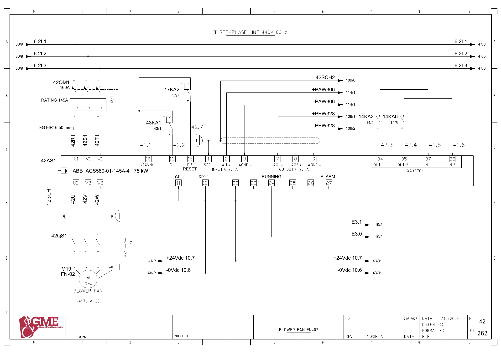
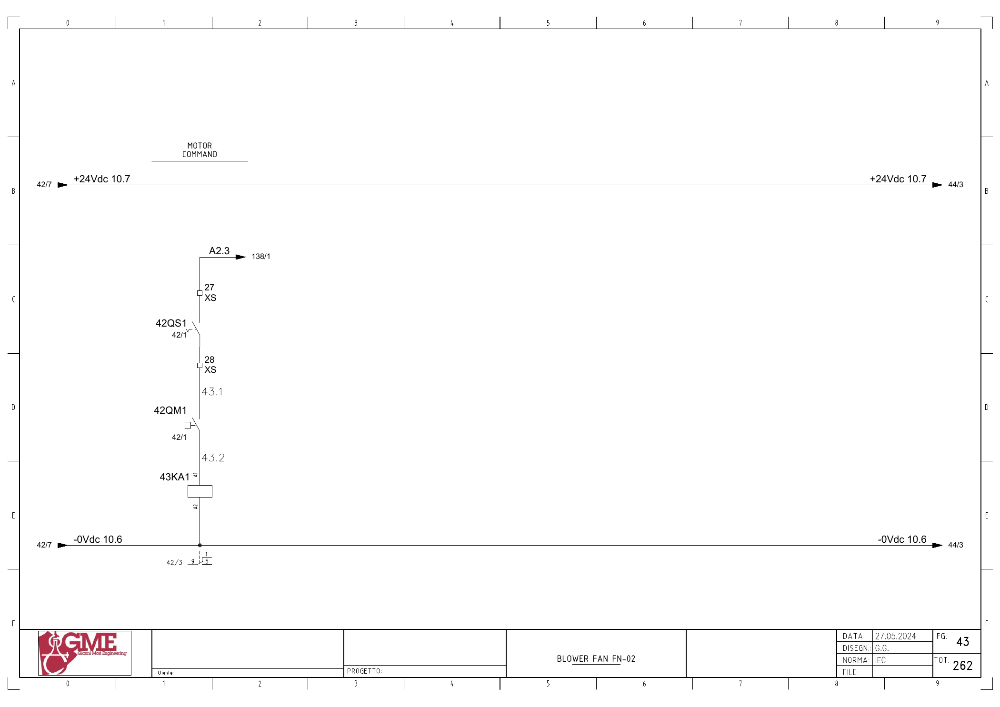

FN02 · 열회수 블로어 전기 회로 추적
1. 도면의 구성과 진단 경계
FG42: M19 FN-02(도면75kW·123A), 42AS1 ABB ACS580-01-145A-4(75kW), 42QM1·42QS1.
운전 요청·DI1 기동·RUNNING 응답·속도 설정·전류를 별도 구간으로 추적합니다. fn-02 aspirator라는 제목만으로 FN04 전류 변환을 FN02에 배정하지 않습니다.
추가 시공도면 · 접속함·케이블·배관 경로 — 승인·현재 설치는 확인 전입니다.
2. 기동 명령
A2.3 ↔ 백업 %Q2.3 / start fn02 · FG43 · PDF 44
- A2.3 (FG138/1)
- XS:27 → 42QS1 보조접점 → XS:28
- 42QM1 보조접점
- 43KA1 코일 A1→A2 / 0Vdc10.6
전달·사용 위치: FG42: 단자10(+24V) → 43KA1 접점1→9 → 단자13(DI1). 원본1948의 요청과1796의2초 감시를 연결합니다.
원본 심볼 직접 참조: 1796 / allarms 1 / ORef 626 · 1948 / motors 1 / ORef 603 · 12 / cyc_int5 ogni 100ms / ORef 365
3. 운전 응답
E3.0 ↔ 백업 %I3.0 / fn02_fbk · FG42 · PDF 43
- +24Vdc10.7 → 42AS1 단자22
- 단자24 → E3.0
- PLC 입력 참조 FG119/2
전달·사용 위치: 원본1796·1948의 내부 FN02 운전 응답을 추적합니다. 물리→DB 전달은 미확정입니다.
원본 심볼 직접 참조: 1026 / time work motor / ORef 1558
4. 인버터 이상
E3.1 ↔ 백업 %I3.1 / fn02_all_inv · FG42 · PDF 43
- +24Vdc10.7 → 42AS1 단자25
- 단자27 → E3.1
- PLC 입력 참조 FG119/2
전달·사용 위치: FN02_INV 래치·요청 해제와 연결합니다.
원본 심볼 직접 참조: 복원 LAD에서 이 이름의 직접 참조는 찾지 못했습니다. 내부 Inputs 등의 별도 전달·미해석 참조·현재 프로그램은 확인 전입니다.
5. 속도 설정
±PAW306 ↔ 백업 %QW306 / fn02_sp · FG42 · PDF 43
- +PAW306 → 42AS1 단자2(AI1+)
- -PAW306 → 단자3(AGND)
- 아날로그 출력 참조 FG114/1
전달·사용 위치: 풍량 설정·아날로그 출력 변환과 요청 해제를 추적합니다.
원본 심볼 직접 참조: 1688 / analog output conversion / ORef 655
6. 전류 전달
±PEW328 ↔ 백업 %IW328 / fn02_current · FG42 · PDF 43
- 42AS1 단자8(AO2) → +PEW328
- 단자9(AGND) → -PEW328
- 아날로그 입력 참조 FG109/1·2
전달·사용 위치: 원본1071 Part122: FN02_Current → Inputs.FN02_ABSORPTION.
원본 심볼 직접 참조: 1071 / hmi inputs / ORef 128 · 1767 / analog input conversion / ORef 1464
위 직접 참조는 복원 원본의 같은 심볼명 위치입니다. 읽기·쓰기 역할, 현재 호출, 현장 사용을 함께 확정한 표는 아닙니다. 원본의 simulation 블록 참조가 있더라도 이번 작업에서 가상 실행·개발·시험은 진행하지 않았습니다.
원본 PLC와 연결
남은 확인과 기록
- FN02와 FN04 전류·변환 대상·HMI 단위의 연결을 주소로 대조
- 인버터 입력 모드·스케일·운전 설정과 정지 요청의 역할 확인
제조사 단자 정의 대조
ABB ACS580-01 하드웨어 매뉴얼 Rev.D의 인쇄141·142페이지(PDF145·146)는22=RO2C,25=RO3C로 정의합니다. 이 자료는 단자 정의 대조에 사용하며 기본 매크로의 신호 기능·전압 모드를 현재 현장 설정으로 간주하지 않습니다.
도면을 함께 확인
FG 42 · 해당 도면 보기

FG 43 · 해당 도면 보기

| 기록 항목 | 내용 |
|---|---|
| 현장 식별 | 설비 ID / 반·단자대 / 모터·인버터 명판 / 도면 개정 |
| 신호 구간 | PLC 명령 / 단자 / 직렬 접점 / 릴레이 / DI / 응답 접점 / 입력 / 내부 DB |
| 관찰 결과 | 시각 / 운전 모드 / 기준값의 근거 / 관찰값 / 최초 불일치 구간 |
| 복구 확인 | 원인·조치 / 원인 해제 / Reset / 재요청 / 주변 설비 영향 |